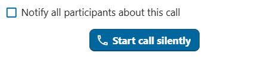
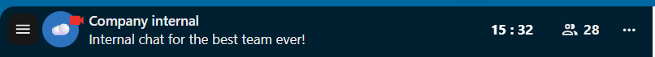
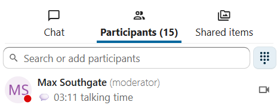

Ag dul isteach i nglao
Glao a thosú nó páirt a ghlacadh ann
Cliant Brabhsálaí agus Deisce Talk
Nuair atá tú mar chuid de chomhrá agus cead agat é sin a dhéanamh, is féidir leat glao a thosú am ar bith trí chliceáil ar Tosaigh glao sa bharra uachtarach. Nuair atá glao ar siúl cheana féin, téigh isteach ann trí chliceáil ar an gcnaipe glas Glac páirt sa ghlao sa limistéar comhrá nó sa bharra uachtarach.

Note
Mura bhfuil cead tugtha agat fós don bhrabhsálaí nó don chliant Talk Desktop do mhicreafón agus do cheamara a úsáid, iarrfar ort é sin a dhéanamh nuair a chliceálann tú ar "Tosaigh glao" nó "Glac páirt sa ghlao". Roghnaigh an micreafón agus an ceamara ar mhaith leat a úsáid agus cliceáil ar "Ceadaigh" chun rochtain a dheonú ar do ghléasanna.
Feicfidh tú Socruithe meán, áit ar féidir leat do thaithí glaonna a shaincheapadh:

Rialú fuaime agus físe
Bain úsáid as deilbhíní an mhicreafóin agus an cheamara ag bun réamhamharc an fhíseáin chun do mhicreafón a mhúchadh nó a dhímhúchadh agus do cheamara a chumasú nó a dhíchumasú sula dtéann tú isteach.
Note
Mura bhfuil ach ceann amháin nó an dá dheilbhín liath, níl micreafón ná ceamara suiteáilte agat, nó níor thug tú cead don bhrabhsálaí ná don chliant Talk Desktop do mhicreafón ná do cheamara a úsáid. Seiceáil gur thug tú cead don bhrabhsálaí ná don chliant Talk Desktop, agus déan cinnte nach bhfuil do mhicreafón ná do cheamara in úsáid ag feidhmchlár eile.
Ligeann socruithe gléis duit a roghnú cén micreafón agus ceamara is mian leat a úsáid. Tá sé seo úsáideach má tá níos mó ná micreafón nó ceamara amháin ar fáil agat:

Cúlraí
Le cúlraí is féidir leat cúlra do fhíseáin a athsholáthar le ceann de na híomhánna réamhshainithe. Is féidir leat d’íomhá féin a uaslódáil freisin nó ceann atá i gComhaid Nextcloud cheana féin a roghnú. Nó is féidir leat an rogha “doiléiriú” a roghnú chun cúlra do fhíseáin bheo a dhoiléiriú.

Glac páirt i nglao láithreach
Más mian leat Socruithe meán a scipeáil amach anseo, múch an lasc Seachain réamhamharc gléis sula dtéann tú isteach i nglao i socruithe an aip. I gcás glaonna amach anseo sa chomhrá seo, glacfaidh tú páirt go díreach, ag scipeáil an dialóg réamhamhairc.
Glao a thaifeadadh
Más tusa a thosaigh an glao agus más mian leat é a thaifeadadh, seiceáil an bosca seiceála Tosaigh ag taifeadadh láithreach leis an nglao. B’fhéidir nach mbeidh an rogha taifeadta glaonna ar fáil duit, ag brath ar cibé an bhfuil an rogha seo cumasaithe ag riarthóirí do chórais agus cibé an bhfuil cead Modhnóir agat don chomhrá. Má tá tú ag dul isteach agus má tá an glao á thaifeadadh, b’fhéidir go mbeadh ort toiliú a thabhairt sula gceadaítear duit dul isteach. Le haghaidh tuilleadh eolais, féach Call recording.
Tosaigh an glao
Cliceáil an cnaipe Tosaigh glao ag bun Socruithe meán chun fógra a thabhairt do na rannpháirtithe uile sa chomhrá faoin nglao. Mura mian leat fógra a thabhairt do na rannpháirtithe eile, cuir tús le glao ciúin tríd an roghchlár trí phonc a oscailt ar chlé an chnaipe Tosaigh glao agus Glaoigh gan fógra a roghnú.

{kind=link}

Note
Is féidir le rannpháirtithe eile fógraí a mhodhnú ar leibhéal gach comhrá, lena n-áirítear an mian leo fógraí glaonna a fháil.
Socrófar do stádas úsáideora go "I nglao" agus taispeánfar emoji boilgeog cainte ar dheilbhín do stádais úsáideora.
Cliant soghluaiste
Nuair atá tú mar chuid de chomhrá agus cead agat é sin a dhéanamh, is féidir leat glao a thosú am ar bith trí thapáil ar an deilbhín Fón nó Físeán sa bharra uachtarach. Tosaíonn an deilbhín Fón glao gutha amháin; tosaíonn an deilbhín Físeán glao físe.
Úsáideann glao gutha micreafón agus cluasán an ghléis, díreach mar a dhéanfadh glao gutháin rialta. Úsáideann glao físe an callaire i mód saorlámha agus cuireann sé do cheamara tosaigh ar siúl de réir réamhshocraithe; is féidir leat é a dhíchumasú am ar bith.
Má thosaíonn duine eile glao, féadfaidh tú fógra a fháil agus féadfaidh do ghléas glaoch nó creathadh, ag brath ar do shocruithe fógra. Tapáil "Fón" nó "Físeán" chun páirt a ghlacadh, nó tapáil an cnaipe dearg chun diúltú. Má dhiúltaíonn tú, cuirtear an fógra glao ar an ngléas sin ar ceal.
Is féidir leat do mhicreafón agus do cheamara a rialú (más glao físe atá i gceist) leis na roghanna a thaispeántar ag bun an scáileáin.
Socrófar do stádas úsáideora go "I nglao" agus taispeánfar boilgeog cainte ar dheilbhín do stádais úsáideora.
Le linn glao
Tar éis duit páirt a ghlacadh i nglao, feicfidh tú an radharc glaonna. Taispeánann sé fothaí físe na rannpháirtithe uile atá sa ghlao faoi láthair, mar aon le faisnéis agus rialuithe breise.
{kind=link}

Taispeánann an eilimint is faide ar chlé an t-am glaonna atá caite.
In aice leis, feicfidh tú líon na rannpháirtithe atá páirteach sa ghlao reatha. Trí chliceáil ar an uimhir, osclaítear an barra taoibh ar dheis agus taispeánfar liosta na rannpháirtithe. Liostálfar na rannpháirtithe atá páirteach sa ghlao ar dtús.
Feicfidh tú am cainte gach rannpháirtí freisin má labhair siad le linn an ghlao:
{kind=link}

Is féidir leat rochtain a fháil ar roghanna agus socruithe glaonna breise ón roghchlár trí phointe sa bharra barr.

Socraigh seomraí scoite amach
Le seomraí scoite amach, is féidir leat glao a roinnt ina ghrúpaí níos lú le haghaidh plé níos dírithe. Ag brath ar do cheadanna agus ar an gcaoi a bhfuil do chás cumraithe, b'fhéidir nach mbeidh an rogha seo ar fáil duit. Le haghaidh tuilleadh eolais, féach Seomraí scoite amach.
Íoslódáil liosta rannpháirtithe glaonna
Is féidir leat liosta na rannpháirtithe i nglao a íoslódáil ón roghchlár trí phonc sa bharra uachtarach. Íoslódálann sé seo comhad CSV ina bhfuil ainmneacha agus seoltaí ríomhphoist na rannpháirtithe uile.

Tá na colúin seo a leanas sa chomhad CSV:
Ainm: Ainm an rannpháirtí.
Ríomhphost: Seoladh ríomhphoist an rannpháirtí.
Cineál: Léiríonn sé seo an úsáideoir cláraithe nó aoi an rannpháirtí.
Aitheantóir: Aitheantóir uathúil don rannpháirtí.
Rialú fuaime agus físe
Tá rialuithe meán, socruithe leagan amach agus gnéithe eile ar féidir leat a úsáid le linn glao ar fáil sa bharra bun den radharc glaonna.

Use the microphone and camera icons to mute/unmute your microphone and enable/disable your camera. You can also use the keyboard shortcuts M to mute/unmute your microphone and V to enable/disable your camera. Use Space for push-to-talk: holding space temporarily unmutes you while muted, or temporarily mutes you while unmuted.
Imoibrithe
Ligeann an cnaipe imoibrithe duit imoibriú emoji a sheoladh chuig gach rannpháirtí sa ghlao.

Feicfidh gach rannpháirtí an emoji ag ardú ó bhun a scáileáin glaonna. Imíonn an emoji tar éis dhá shoicind.
Ardaigh lámh
Clicking Raise hand will notify moderators and show an icon next to your name. This is also available via the keyboard shortcut R.
Lánscáileán
Resizes your browser window or the Talk Desktop client to full-screen mode. Also available via the keyboard shortcut F. Press Esc to return to the regular view.